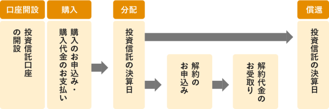

「あなたはお金を増やしたいですか？」
そう聞かれて、「いいえ」と答える人はほとんどいないと思います。
でも・・・、「あなたはお金の増やし方を知っていますか？」
そう聞かれて、「はい、知っています。」と答えられる人はあまりいないのではないでしょうか？
お金を増やしたいと思っても具体的にどうすればよいのか、わからないことが多いものですよね。
ある日突然、収入が増えることはあまり期待できないし、働かずに得られる不労収入を増やそうとしても、そんなに簡単なことじゃない。
「結局、どうすればいいのかわからない」と悩んでいる人も少なくないでしょう。
お金を増やすためには、以下の3つが基本となります。
- ·貯蓄
- ·節約
- ·投資
この三本柱をうまく運用してお金を増やしていくのですが、実は、その前に「収入と支出がどのような状態になっているのか」をきちんと把握する事が必要です。
そこで今回は、お金を増やす前の準備や、お金を増やす三本柱について説明していきます。お金の増やし方についてよくわからない人にもわかりやすく解説していきますので、お金を増やしたいかたはぜひ読んでみてください。
@nobosemonnabe ジブリキャラクターになれる！ #ジブリ#ghibli #ノボせもんなべ#おすすめ ♬ 千と千尋の神隠し Spirited Away - いつも何度でも Itsumo Nandodemo (Always with Me) - JAZZ RIVER LIGHT
目次
1. お金を増やす三本柱は「貯蓄」「節約」「投資」
お金を増やそうと思ったら、「貯蓄」「節約」「投資」の3つを行うことが大切です。それぞれについて説明します。
︳貯蓄
貯蓄とは「お金を貯めること」です。
言葉の意味は簡単ですが、実行するのは意外と難しいことは、皆さんご存じかと思います。
たとえば、お金を貯めようと思っても、稼いだお金を全額財布の中に入れておいたら、いつのまにか使ってしまいます。
そのため、貯蓄をするには、給料や投資などで稼いだお金を貯めておくしくみを用意することが必要になります。一般的には、銀行に貯蓄用の口座を作ることになります。
︳節約
節約とは「無駄遣いをやめること」です。
節約とお金を増やすことは深い関係があります。無駄なお金を使わないようにするとお金が増えていくのです。
たとえ収入が変わらなくとも、支出を見直して無駄な出費を抑えれば、貯蓄に回せるお金が増えていきます。気づかぬうちに浪費しているものがないか、チェックする必要があります。
︳投資
December shows starting next week ❄️🥶
— KEEP (@KeepVA) December 7, 2022
12/15 @thecamelrva w/ Hotline TNT
12/16 @tveyenyc w/ @soulblindhv
12/17 @TheNorVa w/ @turnoverva pic.twitter.com/ZbhLKwhO6E
投資とは「お金を使ってお金を増やすこと」です。
上手に運用できれば、大きくお金を増やすことができます。しかし、その一方で損をするリスクもゼロではありません。
ただ、ある程度のお金を増やすには投資は避けて通れない道です。怖がりすぎて手を出さずにいるのではなく、少額から始められるものや、分散投資をするなど、投資のリスクと上手に付き合いながら行っていきましょう。
2. お金を増やすための準備（お金の見える化）
お金を増やすためには、財布から出て行ったお金が何に使われたのか、まずは支出を「見える化（把握できるようにすること）」しておきましょう。
︳支出には3つの種類があることを理解する
家計の中から出ていく支出は、「消費」「浪費」「投資」があります。それぞれ使い方の違いをみていきましょう。
消費
生活をするために必要な、家賃や光熱費、税金や保険、食費など、月単位で必ず必要となるものです。スマートフォンやインターネットの利用費もこれにあたります。
浪費
浪費とは、レジャーや趣味など必ずしも必要とはいえない支出になります。また、スーパーやコンビニエンスストアで昼食を買うときに、本や菓子などを「ついで買い」をしてしまうことも浪費になりますね。何に使ったのかよく覚えていない支出も浪費のひとつです。
投資
ここで言う投資とは、お金を増やすために金融機関に預けることのほか、資格を取るための書籍の購入や、講習を受けるといった「自分磨き」のために使う支出も含めます。自分磨きの投資は社会人としての素養を身につけたり、仕事に活かして収入アップにつなげることなどが期待できますが、もしも途中で挫折してしまえば、それは浪費となってしまう可能性もあります。
︳お金の流れを記録・把握する
それほど使ったつもりがないのに、「うわっ、財布の中身がどんどん減っている？！」という覚えはありませんか？
お金の流れをしっかりと記録・把握しておけばそういうことは避けられます。
どこでどれだけ使ったのか、しっかりと記録しておきましょう。
自動で収支計算をしてくれるアプリの利用や、預金通帳の記帳をこまめにして、お金の使用履歴を把握することが大切です。
また、お金の流れを記録・把握するには、以下の3つのことにぜひ取り組んでみてください。
- ·銀行口座を分ける
- ·財布を使い分ける
- ·ポイント・クレジットカードを整理する
銀行口座を分ける
「支払い専用の口座」「収入専用の口座」「貯蓄専用の口座」を作り、目的にあわせて使い分けましょう。給与が振り込まれたら「即座に分ける」習慣をつけ、どの口座にいくら預金があるかを常に把握しておきましょう。
生活費を袋分けして管理する
銀行口座を分けるのと同じように、生活費は食費・日用品費・雑費など、それぞれ予算を立て、袋分けして管理しましょう。出費をうまくコントロールすることが可能になります。
ポイント・クレジットカードを整理する
財布の中にたくさんあるポイントカードやクレジットカードは、思い切って整理しましょう。ポイントカードは、メリットがあって頻繁に使うもの以外は処分をし、クレジットカードは1枚だけにします。利用明細がひとつになることで何に使ったのか把握できるようになり、使いすぎを防ぐことにもつながります。
3. 貯蓄を助けてくれる金融商品を知ろう
銀行には、あなたが貯蓄をしやすくなるように助けてくれる金融商品があります。毎月コツコツとお金を貯められるようになる金融商品をいくつか紹介します。
︳財形貯蓄
財形貯蓄は、毎月一定の額が給与から天引きされ、銀行に預金されるものです。誰でも個人的に加入できるものではなく、財形貯蓄制度を導入している企業の社員が利用できるものになります。財形の種類により、貯めたお金の使いみちが限定されることもあります。
︳定期預金
定期預金は、数ヶ月から数年のように、ある程度長い期間預けることを前提とした預金です。一般的に普通預金よりも金利が高くなります。
︳積立定期預金
積立定期預金とは、毎月の積立日に決まった金額を積み立てていく預金商品です。口座から毎月決まった額が自動的に引かれると、貯蓄分は使えるお金という感覚ではなくなり、無駄遣いの防止になります。貯蓄が苦手な人でもコツコツと貯めることができるのでオススメです。
4. 支出を抑えて節約する
節約して支出を抑えることは、同時に増やすお金を生み出すことにつながります。今の生活の中に無駄な支出がないかを確認して、できるところから始めましょう。
︳通信費を節約する
毎日使うものだからと、意外と見直しを後回しにしてしまうのが通信費です。あまり使わないオプションサービスや、必要以上の無料通話が含まれたプランなら、見直すだけで、毎月の費用がかなり節約できます。格安SIMの利用もそのひとつです。調査をする時間と手間がかかりますが、上手な節約につながるかもしれません。
︳光熱費を節約する
電気、ガス、水道などの光熱費も工夫によって節約が可能です。電気代は、古い家電を買い替えることでかなり電気代を節約できる場合があります。また、お風呂の入り方や洗濯の仕方を変えることで水道代の節約にもつながります。電気とガスを同じ会社で契約など、契約を見直しすることで基本料を安く抑えることも可能です。
︳不要な月会費・年会費を見直す
月会費や年会費は、少額であるほど、ついつい「このくらいなら･･････」という落とし穴になりやすいものです。スマホのアプリや動画サービスの月会費、続かないスポーツジムなど、無駄な支出をみつけた時には、見直していきましょう。
︳保険料の見直し
保険の見直しは、大幅に節約できる可能性があります。もしかしたら、自分が加入している保険の保証内容をきちんと把握している人の方が少ないかもしれません。勧められるままに付けた特約なども含めて、今の自分に必要な保障内容に見直しましょう。
5. 資産運用でお金を増やす
国内の金利は低く、ただ単に銀行に預金しているだけでは、お金はなかなか増えません。ここでは資産運用でお金を増やしていく方法をみていきましょう。
︳外貨預金
外貨預金とは、円以外の外国の通貨で預金をする方法です。外国の通貨の中には、日本円よりも金利が高く設定されているものが多く、その分利息が多く受け取れることがあります。また、外貨預金は為替レートの変動により、円での受け取り額が少なくなる「為替差損」が生じるリスクがある反面、円での受け取り額が多くなる「為替差益」を得られる可能性もあります。
︳純金積立
毎月金を購入し、積み立てながら投資していくという方法です。相場変動はありますが、金はインフレ（物価上昇）に強い資産とされています。積立額も1,000円からと少額から可能です。
︳個人向け国債
個人向け国債は、国が発行する債券であり、元本が保証されているためリスクが低い投資として知られています。1万円単位で購入できる投資方法で、満期になると元本と利子が受け取れます。
︳社債
社債とは、企業が発行する債券に対して投資をする方法です。「普通社債」「転換社債」「電力債」などの種類があり、定期預金と比較すると金利は高めですが、企業の業績の影響を受ける可能性も。また、購入は、十万単位や百万単位などある程度の資金が必要なことが多くなります。
︳投資信託
投資信託は、運用のプロであるファンドマネージャーに資金を預けて、資産運用を任せる方法です。株式に投資するもの、債券に投資するもの、不動産に投資するものなど非常に種類が豊富で、投資対象地域も国内、先進国、新興国など実にさまざま。しかし、プロが運用したとしても、為替や価格の変動により損をする場合もあることを覚えておきましょう。通常、利益に対して20.315％の税金がかかりますが、「NISA口座」を利用することで、一定の金額の範囲なら非課税とすることもできます。
︳投信積立
投資積立は、毎月一定の金額を積み立てて投資信託を購入する方法です。月々1万円程度から積み立てができるので、「とりあえず少額から投資を始めてみたい」という人に向いています。もちろん、価格の変動に影響されることがありますので、損失が出るリスクはあります。
︳iDeCo（個人型確定拠出年金）
iDeCo（イデコ）は、積立預金と投資の両面を持つ、自分で作る年金です。毎月一定の掛け金で積み立てながら投資をするしくみとなっており、掛け金の全額が、所得から控除される点がメリットです。「年金」という性質であるため、加入後は基本的に60歳以上でなければ引き出しができませんので注意しましょう。
︳株式投資
株式投資は、企業の株式を購入し、配当や株価が値上がりをしたときに売却することで利益が生まれるという投資であり、最もよく知られる投資方法ではないでしょうか。投資信託と同様、利益に対して20.315％の税金がかかりますが、「NISA口座」を利用することで、一定の金額の範囲なら非課税とすることもできます。
︳株式累積投資
株式累積投資とは、毎月1万円以上で千円単位の一定額の株式を購入する投資方法です。「るいとう」と呼ばれることもありますね。少額ずつ積み立てするように購入できるため、まとまった資金がなくとも運用が可能です。しかし、株式累積投資を扱う機関は一部の証券会社に限られることや銘柄も限定されているため、自由な取引ができないという面があります。
︳不動産投資
不動産投資は、マンションやアパート、貸家などの不動産を購入して、賃貸することにより家賃収入を受け取る投資方法です。大きな金額の投資というイメージがありますが、不動産投資ローンを利用することで、少ない資金で始めることも可能です。入居者さえ確保できれば、手堅く運用できる可能性が高いといわれますが、空室のリスクがあるため、投資する物件の目利きは必要となるでしょう。
6. ＜番外編＞副業でお金を増やす
収入そのものを増やしたいと考えている人も多いでしょう。とはいえ、会社勤めでは、急に収入が上がることはなかなか期待できません。そのような場合には、「副業」でお金を増やす方法があります。お勤めの会社によっては、就業規則で副業が認められていない場合があるので、確認が必要です。
︳アフィリエイト
アフィリエイトは、ウェブサイトである商品などを紹介することで報酬を受け取るシステムです。サイトを作るという手間や実績が出るまでに数ヶ月から年単位かかることもありますが、うまく軌道に乗り報酬を得ることができれば、一定の収入を得る可能性もあります。
︳不要な中古品販売
使わなくなった家具や衣類、本・CDなどをネットオークションなどで売ることでも、収入を得ることができます。中古のものは買い取りサービスを利用していた人も多いかもしれませんが、今は「自分の言い値」で販売することが気軽にできるサービスもたくさんあり、少し手間をかけるだけで高く販売することも可能です。
︳自分のスキルを売る（クラウドソーシング）
ライティングやWeb制作など、自分が得意とするスキルをインターネット上で受注し、収入を得ることができるクラウドソーシングというシステムがあります。自分の都合の良い時間帯にあわせて対応できることがメリットとなるでしょう。
お金を増やすため何ができるのか、さまざまな視点から確認してきました。「貯蓄」「節約」「投資」の三本柱を軸に、今のお金の使い方の把握と準備をしっかりして、今日からさっそくお金を増やしていきましょう。
初心者さんでも大丈夫！投資のはじめかた
投資の経験がない初心者の方は、資産運用をしようと思っても何をどう始めれば良いのかいまいちピンとこないかもしれません。
この記事では、投資初心者の方向けに投資商品の基礎知識や、投資のはじめかた、取引の流れについて解説します。初心者の方でも安心して投資をはじめられるよう、正しい知識を身につけましょう。
初心者の投資は何から始めるべき？
投資と一言にいっても、その種類はさまざまで、それぞれ特徴が異なります。
まずは主な投資商品の種類と特徴をチェックするところからスタートしましょう。
ここでは代表的な投資商品を3つご紹介します。
個人向け国債
● 仕組み
国が発行している債券（＝国債）を購入し、一定期間保有することで定期的に利子を得たり、満期で元本を返済してもらえる商品です。
● 必要な資金
個人向け国債は1万円から購入可能で、金融機関からの購入だけでなく、個人間でも取引または相続が可能です。
●リスク度合い
個人向け国債は元本保証がありますので、投資した元金以下になることはありません。その一方で、購入後1年間は原則途中換金（解約）することができません。また、金利は0.05%程度と、以降に紹介する金融商品と比較すると低い水準にあるといえます。
投資信託
● 仕組み
複数の投資家たちから集めた資金をもとに、資産運用のプロである運用会社が投資家の代わりに投資・運用を行う商品です。
● 必要な資金
たくさんの投資家から資金を集めるので、1人あたりの購入金額が抑えられ、5,000円程度の少額から投資することが可能です。
● リスク度合い
運用はプロに一任できるため、投資の知識や経験がない初心者の方でもリスクを抑えて資産運用ができます。
株式
● 仕組み
企業が発行した株券を投資家が売買したり、配当金を受け取ったりして資産運用を行う商品です。
● 必要な資金
最低売買単位が100株と決められているため、有名な銘柄を購入したいと思うとまとまった資金が必要になります。
● リスク度合い
投資信託と比べると、価格変動リスクが大きいためタイミングを誤ると損をする可能性も高いといえます。安定した運用をするためには株式投資に関してある程度の知識が求められます。
一方で、購入時より高くなったタイミングで売却すれば、ハイリターンを狙うことができます。
投資初心者はまず投資信託から始めるのがおすすめ
資産運用における代表的な投資商品として、個人向け国債、投資信託、株式をご紹介しましたが、投資の知識・経験ともに少ない初心者が始めるのなら、投資信託を選ぶのがおすすめです。
投資信託は5,000円程度からと比較的少ない金額から気軽に投資をスタートすることが可能です。
また、多くの投資家から資金を集めて、それを元に運用する投資信託なら、国内外の株式や債券など、複数の銘柄に分散投資することができるので、1つの銘柄で損失が出てしまっても他の銘柄で損失をカバーすることができ、リスクを抑えることができます。
投資家は銀行や証券会社などの販売会社を通じて投資信託を購入しますが、実際の運用はプロが代行するため、投資の知識・経験が浅い初心者にうってつけの商品といえるでしょう。
ただし、株式などに比べるとリスクが抑えられるぶん、大きなリターンも得にくくなっており、長い目で運用する必要があります。また、初心者向けの投資信託でも、リスクやデメリットは存在しますので、資産運用を始めるなら、事前に最低限の知識を学んでおきましょう。
まずは何を準備すればいい？ 実際のお取引の流れ

投資信託を始めるにあたって、取引を始めてから利益を得るための流れをご紹介します。
1.口座開設
まずは投資信託を取り扱っている銀行や証券会社などの金融機関で、口座を開設します。
口座といっても普通預金口座と投資信託の口座は異なるので、専用の口座を開設する必要があります。
もともと投資信託口座を持っている場合はそれを利用してもかまいませんが、投資信託の利益が年間20万円を超えると確定申告が必要です。
源泉徴収ありの特定口座を開設すれば、確定申告の手間を省けますので、中・長期での投資信託を検討している場合は、特定口座を開設することをおすすめします。
投資信託の税金や確定申告について、くわしくはこちらをご覧ください。
2.投資信託の購入
投資信託口座を開設できたら、自分の好みやニーズに合った投資信託を選び、購入します。
投資信託の種類によって信託報酬の額や信託財産留保額の有無に違いがありますので、あらかじめ投資信託の詳細を記した「投資信託説明書（目論見書）」に目を通しておきましょう。
また、投資信託の購入時には所定の手数料がかかります。
投資信託にかかる手数料について、くわしくはこちらをご覧ください。
3.決算・分配金の受領
投資信託を購入し、決算日を迎えると、運用の成果に応じて分配金が支払われます。
販売会社からは、投資信託がどのように運用され、どんな結果になったかを記した「運用報告書」が年に1～2回のペースで作成・交付されます。
4.換金（解約)の申込
投資信託はいつでも換金（解約）することが可能です。
販売会社に換金を申し込めば、原則として数営業日以内に代金が支払われます。
なお、投資信託によっては換金（解約）できない期間（クローズド期間）を設けているところもあります。
また、商品によっては換金（解約）時に信託財産留保額の支払いが発生するものもありますので、事前に投資信託説明書で確認しておきましょう。
5.投資信託の償還
投資信託の償還とは、投資信託の運用期間が終わり、清算して、投資家に対して償還金と呼ばれるお金を返上することです。
投資信託の償還日を迎えると、販売会社から償還金のお知らせが送付されると共に、投資家が預け入れていた信託財産が返還されます。
商品によっては償還時期を定めておらず、換金（解約）を申し込まない限り、ずっと保有し続けられるものもあります。
投資で失敗しないための初心者の心得3つ
投資信託は株式投資などに比べるとローリスクの金融商品ですが、まったく知識のないままスタートすると、思わぬ損害を出してしまうこともあります。
初めての投資信託で失敗しないために、以下3つのポイントを押さえてから資産運用を始めましょう。
①余裕資金で運用する
投資信託は預貯金とは異なり、元本保証のない商品ですので、手元の資金をすべてつぎ込むと、家計や将来のライフプランに打撃を与えてしまうおそれがあります。
投資信託は余裕資金で購入し、日常の生活に支障の出ない範囲でまずは堅実に運用しましょう。
②リスクがあることを心に留めておく
投資信託も株式投資同様、リスクがゼロではありません。初心者におすすめとはいえ、メリットにばかり目を向けて投資をスタートするのは危険です。
投資にあたっては、必ずリスクがあることを心に留め、資産運用の目的に合わせた無理のない運用を心掛けましょう。
③長期・積立・分散でリスクを抑える
投資信託は株式投資に比べてリスクが抑えられるぶん、大きなリターンも得にくいです。しかし、長期で運用していくことによる複利効果からリターンを得ることが期待できます。そのため、投資信託は基本的に中・長期での運用が良いと言われています。
特に初心者の方は、まとめて一気に購入するよりも、一定金額で定期的に投資をする積立型の運用を行うのがおすすめです。
なぜなら、積立で毎月一定額を購入していくと、安い時は多く、高い時は少なく買い付けられるので、購入単価が自然に均等化されていき、リスク分散につながるからです。
初心者の方はなかなか購入のタイミングをつかみにくく、高値の時に買い付けてしまうミスを犯しやすいので、少額からでもコツコツ積み立てて長期的な視野で運用した方が時間的なリスク分散が可能で、より安定した運用が行えます。
すべての投資家にとって、一連の方法と資本管理の使用を見つけたかどうかは、非常に重要です。 今回が難しければ難しいほど、正しい概念を教えてくれる人が必要になります。 株式市場では、少しはもっと悪い. 私が株式市場でどのように段階的にお金を稼いだか、いくつかの概念、いくつかのスキル、およびいくつかの過去の精神的な旅を参照したい場合があります.
私のゴールドラッシュコラム：
cyx444444
リンクをクリックして直接参加: https://line.me/ti/g/4meD6NCm-j
私の回線は追加されますか? コミュニティへの招待に参加し、株式選択のアイデアとスキルを定期的に共有します。追加するかどうかは完全に任意です。すべての共有は料金を請求せず、その後は公開されません。返信してください
コミュニティの設立は、純粋に株式市場の多くの初心者が正しい投資概念を確立するのを支援することであり、そこから利益を得ることを望んでいません.結局のところ、私が株式市場から得た利益は、これらの利益よりもはるかに大きい.さらに、グループ共有は時間をつぶすだけでなく、さまざまな場所であらゆる分野の多くの友人を作ることができ、そこから得られるものはこれらよりもはるかに大きい.
また、良き師匠や親切な友人が不足している投資パートナーを支援し、同じ価値観を持つより多くの人々を集め、健全な議論を行うことで、投資を面白くし、真に人生を向上させたいと考えています。 富の評価を達成するために、より良い運用戦略が得られます。 私の共有が役立つと思われる場合は、遠慮なく「いいね」を押し、メッセージとフォローアップを残してください。志を同じくする友人がラインを追加して学習の進捗状況を交換することを歓迎します!